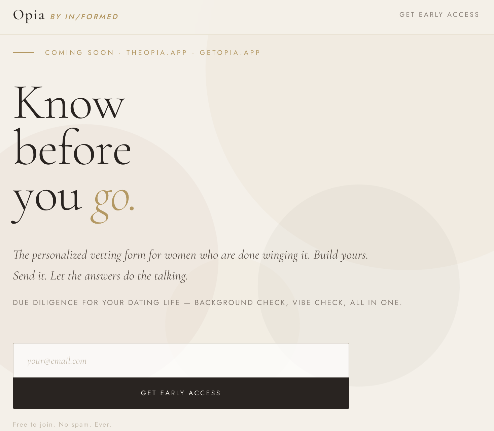

Opia landing page — theopia.app
What is Opia?
Opia is a personalized vetting form for people who are done winging it in dating. It lets you build a custom intake questionnaire, share a link, and receive responses directly in your inbox — alongside an AI-generated compatibility report that flags answers, cross-references data, and issues a provisional determination.
The name comes from The Dictionary of Obscure Sorrows: opia — the ambiguous intensity of looking someone in the eye, simultaneously invasive and vulnerable. The feeling of seeing and being seen at the same time.
Opia is built on the belief that radical honesty is the foundation of real connection — and that the right conversation, asked early enough, can change everything. It is also the product of one very long Sunday afternoon, a lot of frustration with dating apps, and a questionnaire that started as a joke and became something serious.
What I built
- A 40-question multi-section intake form with a luxury spa aesthetic
- A flag system that quietly marks red and yellow flag answers
- Email delivery via EmailJS — responses land in a real inbox
- An AI-generated compatibility report in Word document format
- A waitlist landing page with animated shapes, constellation visuals, and data-backed copy
- Both deployed live via Netlify
Tools & technologies
- HTML, CSS, JavaScript — all hand-written
- React (JSX) for the form interface
- EmailJS for form submission delivery
- Netlify for deployment
- Node.js + docx library for report generation
- Claude (Anthropic) as a creative and technical collaborator
What I learned
- How to deploy a real project to a live URL from scratch
- How to wire a form to a third-party email service
- The difference between a JSX file and a deployable HTML file
- That "the form is the conversation" — and that interactive media can be deeply human
- That I accidentally started a company
"I built this because I was tired of finding out the important things after I already cared. The form is the conversation I wish I'd had first."— KJB, Founder of Opia